Escola Sant Jordi de Palafrugell: l'equip, els reptes que hem fet des de 1r d'ESO, les competicions i el diari de classe del robot d'enguany.
4membres
4temporades
13entrades
82%robot
01/ Qui som
L'equip d'aquest curs
P
Pau
equip_4t_eso
M
Martina
equip_4t_eso
B
Bryan
equip_4t_eso
A
Alfons
equip_4t_eso
Com treballem
Som 4 persones i ens repartim tota la feina: la pàgina web, aquest bloc, el treball de recerca i investigació, el disseny i muntatge del robot, la programació i les competicions.
Robòtica com a Treball de Recerca
Aquest curs la robòtica ha deixat de ser optativa: forma part del Treball de Recerca (Mestre Segrera), el projecte més important de 4t d'ESO. L'equip ha anat canviant de membres, però portem des de 1r d'ESO construint robots i competint amb VEX.
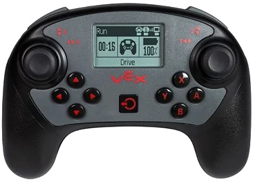
02/ Trajectòria
Els nostres reptes, curs per curs
Cada any hem afrontat un repte oficial diferent de VEX, amb un robot nou construït de zero.
1r ESO · 2023–24Competit · Girona i Andorra
VEX IQ — Full Volume
Recollir blocs de tres colors (verds = 1 pt, violeta = 3 pts, vermells = 5 pts) i deixar-los a les cistelles de les cantonades, amb bonus per netejar la zona extra i per acabar el robot posicionat dins seu.
2n ESO · 2024–25Competit · Girona
VEX IQ — Rapid Relay
Encistellar pilotes verdes en aliança de 2+2 jugadors, desbloquejant porteries per multiplicar els punts de cada passada (fins a 12 punts amb les 4 porteries desbloquejades). Competició a Girona des del 3 de febrer de 2025.
3r ESO · 2025–26Robot inacabat
VEX V5RC — Push Back
Apilar 88 blocs hexagonals en 4 Goals i controlar zones, en un camp de 12×12 peus amb 2 robots per aliança. Aquell curs no vam arribar a competir.
4t ESO · 2026–27 · actualEn curs
VEX V5RC — Override
Apilar Pins i Tasses en Objectius, controlar els Toggles i dominar la zona central (Midfield) en els últims 10 segons del match.
03/ Menció d'honor
Exalumnes al Mundial VEX
Els companys que ens han precedit ja han arribat on volem arribar nosaltres: la final mundial de la VEX Robotics Competition, als Estats Units.
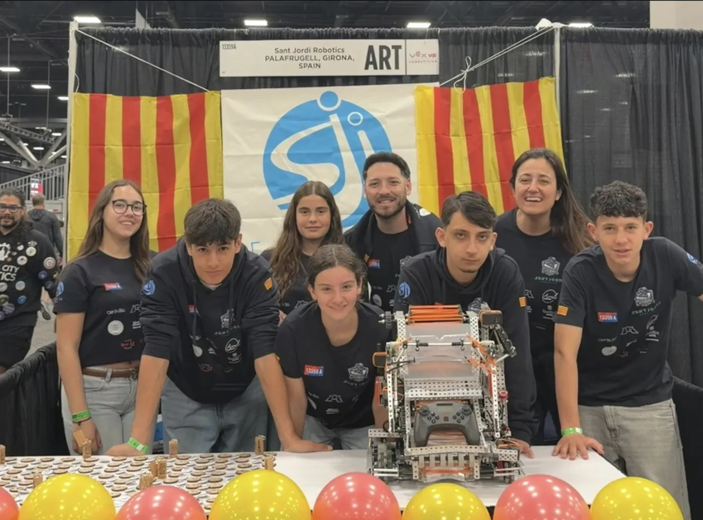
13359A · Saint Louis, 2026
Menció d'honor
13359A · Sant Jordi Robotics
L'equip de 4t d'ESO del curs 2025‑26 va representar l'Escola Sant Jordi i Palafrugell a la final mundial de la VEX V5 Robotics Competition.
On i quanSaint Louis, Missouri (EUA) · 25, 26 i 27 d'abril de 2026
Camí fins al MundialRegional a Girona, nacional a Barcelona i torneig internacional a Andorra
Resultat4 partides de qualificació guanyades, a la zona mitjana del torneig
Equip7 alumnes de 4t d'ESO, amb el professor i coordinador Manel Dobaño
Gràcies per obrir el camí: sou l'exemple que volem seguir.
No era la primera vegada: el 2024 l'escola ja havia representat l'estat a la final de Dallas, en categoria Middle School. Font: Ràdio Palafrugell.
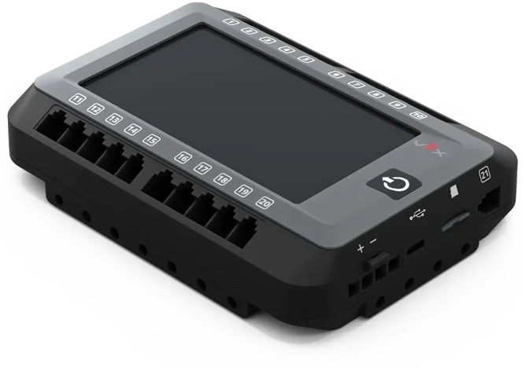
04/ Estat actual
Progrés del robot
Robot Override
Actualitzat el 6 de novembre de 2026
82%
Pista de pràctica
Base reaprofitada
Pilars i engranatges
Peça del canvi de color a la base
Barra frontal i patins
Base reforçada
Pinça giratòria acabada
Estructura d'ascens (2a part)
Mecanisme del braç
Programació autònoma
Proves a pista
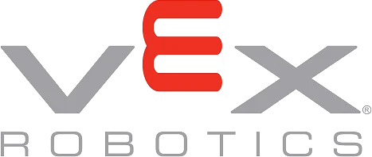
05/ On competim
Competicions i el circuit VEX
El calendari VEX funciona per nivells: torneigs classificatoris locals, fases catalanes i estatals, i finalment el VEX Robotics World Championship.
Andorra
Torneig disputat a mitjan gener de 2024
La nostra primera sortida fora de l'estat espanyol
Girona
Full Volume: competició del 3 de febrer de 2024
Rapid Relay: competició iniciada el 3 de febrer de 2025
Palarobòtica
Jornada STEAM local de Palafrugell des de 2018
Tecnofestival, xerrades i exposicions entre els centres
Com es classifica
Depèn del rànquing als torneigs i també de premis especials com l'Excellence Award o el Design Award.
El nostre objectiu
Ampliar el recorregut cada temporada: consolidar-nos als classificatoris catalans i optar a fases estatals i internacionals.
06/ Diari de classe
Diari · curs 2026–27
Cada dia de classe, un membre diferent de l'equip escriu què hem fet. La més recent, a dalt.
06nov.2026
PPau
divendres
Avui hem intentat col·locar la peça del mecanisme del braç, però ens hem adonat que les dues barres verticals estaven col·locades al mig, cosa que feia que aquestes peces quedessin massa endavant. Les hem tirat al màxim enrere, pràcticament a la part de darrere de tot, i per fer-ho hem hagut de treure les rodes dels patins, perquè molestaven massa.
També hem avançat amb les barres de davant, que ens facilitaran col·locar-nos a la torre de la pista.
04nov.2026
AAlfons
dimecres
Avui he modificat la peça del braç que la Martina va fer l'últim dia: per un problema de mides, l'he tallat i he fet la peça més curta per tenir més espai, però encara no l'he acabat.
La pinça ja està finalment acabada, i en Bryan s'ha encarregat de fer una altra part que també formarà part del braç.
03nov.2026
MMartina
dimarts
Avui hem acabat de fer la pinça giratòria i hem arreglat algunes coses del robot, com la part de davant: a la part que s'encaixa a les plataformes li hem posat dues peces perquè encaixi millor i el robot no es trenqui.
També hem acabat la primera part de l'estructura que puja cap amunt i hem estat mirant com començar la segona part de l'estructura.
28oct.2026
BBryan
dimecres
Avui hem treballat tres membres de l'equip: la Martina, l'Alfons i jo, en Bryan.
Hem treballat en el reforç de la base del robot, afegint-hi millores perquè pugui aguantar millor el pes de les diferents peces i els moviments que haurà de fer. També hem reforçat l'estructura per evitar possibles problemes d'estabilitat i aconseguir que totes les parts quedin ben subjectes.
A més, hem estat treballant en el mecanisme dels engranatges que permeten aixecar la pinça. Ara estem millorant aquest sistema perquè el moviment sigui més suau, precís i eficaç, i encara estem fent proves i ajustaments perquè la pinça pugui pujar i baixar correctament.
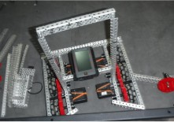
La base reforçada amb l'estructura
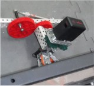
El mecanisme que aixeca la pinça
27oct.2026
BBryan
dimarts
Avui hem treballat tot l'equip junt: la Martina, en Manel (el professor), en Pau, l'Alfons i jo, en Bryan. Ens hem centrat a continuar millorant la base del robot i la pinça. Hem revisat els moviments de la pinça perquè pugui obrir-se i tancar-se, girar i agafar les peces de joc amb més facilitat. També hem comentat alguns canvis que podem fer per millorar l'estabilitat i la mobilitat del robot.
Amb l'ajuda del professor hem anat revisant les idees i les possibles solucions als problemes que han anat apareixent durant la construcció. D'aquesta manera hem pogut compartir idees, repartir-nos les tasques i avançar conjuntament en el projecte.
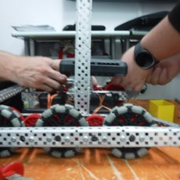
Treballant a la base del robot
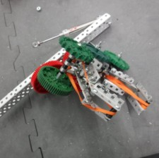
La pinça: obre, tanca i gira
23oct.2026
PPau
divendres
Avui és divendres i l'Alfons ha fet 2 hores: ha vingut a les 15 h. La Martina ha avançat el mecanisme d'ascens del robot (el mecanisme que fa guanyar alçada al robot). Mentrestant, l'Alfons ha volgut donar més mobilitat a la pinça, concretament a les arpes.
20oct.2026
AAlfons
dimarts
He seguit amb la pinça que en Pau em va ajudar a avançar acabant les garres; avui l'he ajustat i hi he fet canvis perquè funcioni bé. Ara és més funcional: gira, i pot agafar la peça de joc manipulant-la per obrir-se i tancar-se.
Mentrestant, els meus companys i el professor han avançat amb la base del robot, ajustant-la per fer-la més estable i ajustada al model final que volem aconseguir: un disseny propi, inspirat en idees d'altres robots que hem vist.
14oct.2026
AAlfons
dimecres
Avui la Martina i jo ens hem repartit la feina a l'aula: ella ha seguit treballant en la base, perfeccionant el suport i l'estabilitat, i ja ha començat amb el mecanisme d'engranatges per moure el braç del robot. Jo, en canvi, estic treballant en la pinça, que fa servir una combinació de pneumàtica i mecànica (engranatges).
13oct.2026
PPau
dimarts
Avui el primer que hem fet ha sigut anar a l'aula de tecnologia a tallar unes peces necessàries per a la pinça. Mentre en Manel les tallava, hem intentat col·locar les barres davanteres dels patins, que estan en diagonal, però hem vist que havíem de retallar una mica les barres exteriors dels patins; un cop més curtes, hem pogut posar la barra diagonal sense cap complicació.
Després també hem col·locat una barra que va a l'interior del robot, que també hem hagut de tallar.
Hem tornat a la classe i en Bryan, l'Alfons i jo hem continuat amb la pinça amb les peces tallades, mentre la Martina afegia una barra frontal que ens ajudarà a col·locar-nos bé en agafar una peça de la pista.
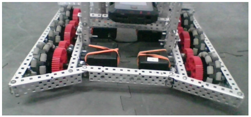
La part frontal del robot
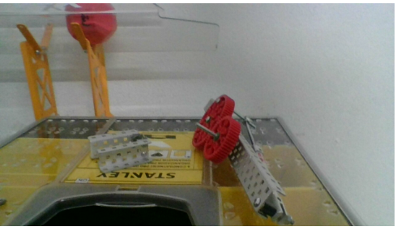
La pinça al final de la classe (falta enganxar-hi la peça)
30set.2026
BBryan
dimecres
Durant aquesta sessió de robòtica, la Martina i jo hem començat a muntar el nou disseny del robot, que vam decidir canviar ahir amb el profe Manel. L'objectiu és tenir un robot més avançat que ens permeti aconseguir una puntuació més alta a la pista.
Per això, amb l'ajuda del Manel, vam decidir redissenyar l'estructura perquè sigui més robusta i estable i, alhora, més versàtil.
Amb aquest nou disseny podrem afrontar més missions en una sola sortida, aprofitar millor el temps de la ronda i, en conseqüència, sumar més punts. Aprofitant l'experiència del muntatge anterior, mantenim la idea d'utilitzar un mateix motor per fer més d'una acció, perquè simplifica la programació i estalvia components.
25set.2026
PPau
divendres
Avui hem estat 2 hores més treballant el robot. Érem la Martina, que ha hagut de marxar a les 16 h, i jo, en Pau. Hem continuat el molt bon treball que van fer els nostres companys el dimecres: la idea d'avui ha sigut col·locar i enganxar a la base la peça que estan fent l'Alfons i en Bryan.
Només hem tingut un petit contratemps: en enganxar la peça, els forats no coincidien per la col·locació dels separadors als eixos de la part esquerra de la peça (el fragment en què havien estat treballant el dimecres). No ha sigut cap problema: hem reduït l'espai entre barra i barra traient algun separador dels eixos i ens hem assegurat que quedés perfectament alineada i completament recta a 90º. Després hem enganxat aquesta gran peça a la base.
Un cop acabada aquesta tasca, hem fet l'altra encomanada: unir la pinça amb el braç del robot, que de moment només són dues barres de 25 però que millorarà properament. No era una tasca senzilla, perquè la pinça no s'assemblava gens a la de les instruccions, però ens les hem hagut d'enginyar. Primer hem provat d'enganxar la pinça a una barra i unir-la amb gomes, posant dos eixos, fixadors i dues gomes, però no ha funcionat.
La Martina ha hagut de marxar i m'ha tocat pensar-hi jo sol. A l'aula també hi havia dos companys de 3r que estaven fent gairebé el mateix que nosaltres i tenien exactament el mateix problema, així que hem pensat la solució junts: posar una barra d'1x5 que connecti les dues barres del braç amb la pinça i que, a sobre, la mantingui horitzontal.
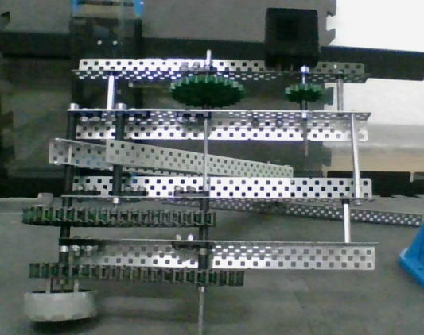
La peça enganxada i alineada a la base
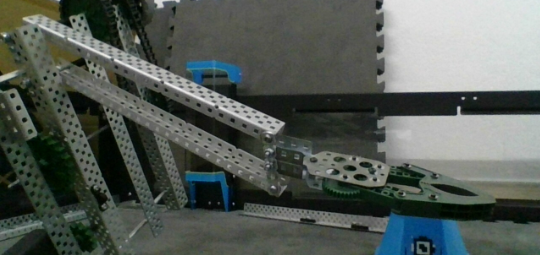
La pinça unida al braç amb la barra d'1x5
23set.2026
BBryan
dimecres
Avui en Bryan i l'Alfons hem treballat en el muntatge d'una part clau del robot: el sistema d'elevació de la pinça combinat amb el mecanisme de canvi de color dels panells de la pista.
El primer que hem muntat ha estat una estructura formada per 4 columnes verticals, que és l'esquelet que subjecta i guia tot el sistema d'engranatges; gràcies a aquesta configuració, el moviment de pujada és estable i recte, sense que l'estructura es torci o es desnivelli. Dins de les columnes hi hem col·locat un conjunt d'engranatges connectats entre ells, la funció dels quals és transmetre el gir del motor al llarg de tota l'estructura, ajustant la força i la velocitat necessàries per moure la pinça amb precisió.
El gir generat pel motor passa a través dels engranatges i fa que la pinça pugi o baixi segons el sentit de gir: aquest és el mecanisme principal que ens permetrà agafar i deixar anar elements durant la partida.
El més interessant d'aquest muntatge és que hem aconseguit que, alhora que puja la pinça, una roda connectada al mateix sistema giri i canviï el color d'uns panells de la pista de joc; és a dir, amb un sol motor aconseguim dues accions simultànies: elevar la pinça i voltejar els panells. Aquest disseny és útil perquè, en sincronitzar els dos moviments amb el mateix sistema de transmissió, estalviem motors i simplifiquem la programació, ja que no cal controlar dos mecanismes per separat.
22set.2026
AAlfons
dimarts
Avui no és el primer dia de feina: vam començar el curs passat, a finals de tercer, desmuntant el robot d'aquell any i vam deixar-ho aquí en espera del curs següent.
El primer dia de robòtica de 4t va ser el 15 de setembre. El professor ens ho va explicar tot: hauríem de començar muntant la pista de pràctica i el robot per avançar feina i tenir el robot fet com més aviat millor. Això implica saber manipular i identificar eines i material —fonamental per a un bon flux de treball—, organitzar-nos tant individualment com en equip, i tirar endavant el treball de recerca: buscar, dissenyar i analitzar robots, i preparar tècniques i plans de joc per tenir avantatge a les partides.
Aquell dia 15 vam acabar la pista de joc de l'aula i vam continuar amb el robot, que ja tenia la base començada del curs anterior, ajudant-nos de les instruccions. Avui seguim treballant en la part del mecanisme i l'estructura del robot: la pinça, que és clau perquè el robot pugui jugar sense problemes a la pista i sigui estable, versàtil i amb bon rendiment; i els pilars del robot, on van tots els engranatges que fan funcionar el mecanisme.
El diari continuarà amb noves entrades a mesura que avanci el curs.